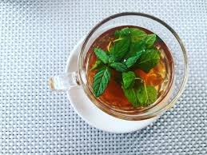

A nutritious, invigorating, probiotic drink made with apple cider vinegar that reduces blood sugar, enhances healthy gut bacteria, lowers cholesterol, lowers insulin, helps loose weight, improves immunity, helps with digestion and consistency, and increases energy and vitality.
A warm tea that contains honey, lemon and ginger which helps to increase immunity, detox, improve digestion, and has anti-inflammatory advantages.
The ingredients used to make golden milk have antibacterial and antiviral properties, such as turmeric, which can protect your body against infections. Your immune system may also be strengthened by their antioxidant and anti-inflammatory properties.
Some respiratory diseases ranging from cold and cough to bronchitis and asthma are prevented by Tulsi tea. For the respiratory system, it has immunomodulatory (helps to improve immunity), antitussive (helps to relieve cough) and expectorant (helps to remove the phlegm) properties that provide relief.
Rasam is rich in thiamine, folic acid, vitamin A, vitamin C, niacin, and riboflavin, which are essential vitamins. Some of these vitamins, which keep the body healthy, also act as antioxidants. As a fairly good source of minerals, rasam is an ideal food to be included in a balanced diet for individuals.
Yogurt can enhance the gut microbiota, be high in protein, calcium, vitamins and live culture, or probiotics. These can offer bone and teeth protection and help prevent digestive problems. On a diet for weight loss, low-fat yogurt can be a useful source of protein. The immune system may is also boosted by probiotics.